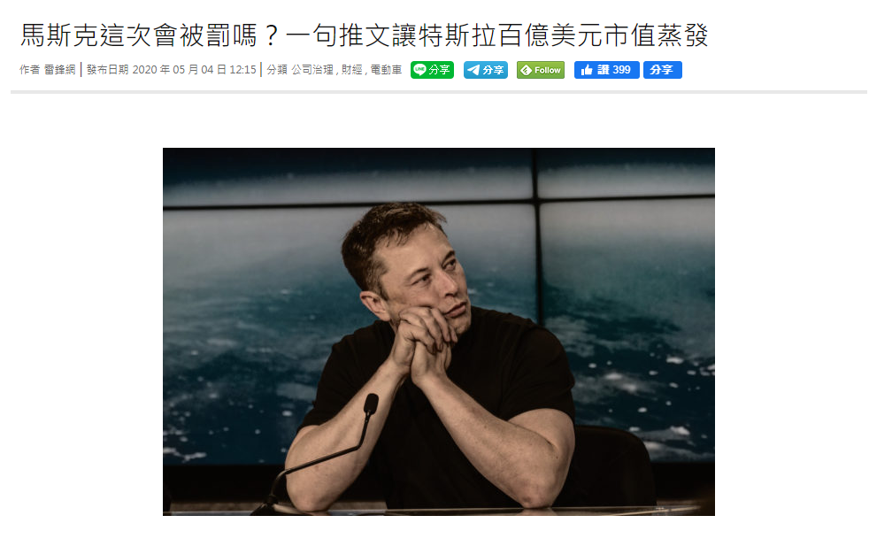

利用自然語言處理(NLP)使股價預測更為精準
Posted on 週三 05 六月 2019 in articles • Tagged with Natural Language Processing, Stock
本篇結合自然語言處理的相關技術與統計資料分析為2019年選修資工所類神經網路課程時所做的side project。
（2020/08/13更新）
前言
股價的漲跌往往不是我們這些股市菜鳥所能夠理解的，尤其是在股價的起伏還受到各種消息面的影響，甚至老闆的一句話就可以讓股價一飛沖天或跌落谷底，近年來最著名的例子就是特斯拉的執行長 Elon Musk，若沒有掌握到這些消息將會對股價的漲幅丈二金剛摸不著頭緒。
 Elon Musk 總是喜歡在Twitter上發表個人看法，他的一言一行牽動著旗下公司股價的漲跌 ( 圖片來源 )
有些股市老手會說：哎呀花時間閱讀那些資訊是沒有用的，等你看到時早就已經反映在股價上了，但事實上可能有些資訊早就潛藏在其中，只是礙於我們的經驗不足而無法做出適當的判斷。
因此本篇將透過自然語言處理（Natural Language Processing, NLP）試著將公司行號釋出的重大消息資訊納入，透過科技來輔佐我們在茫茫的資訊海中抽絲剝繭，以期望能輔助我們尋找出其中的脈絡並先行做出部署 …
Continue reading